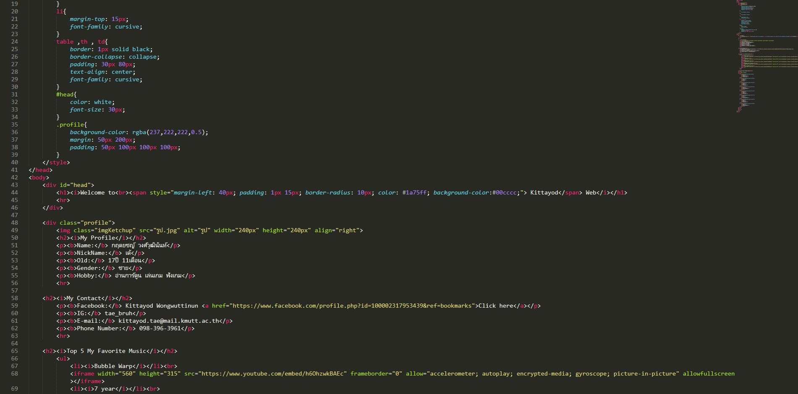

ผมเลือกสายงานด้าน Website เพราะผมมีความถนัดทำเว็บไซต์ จึงอยากที่เลือกสายงานที่ถนัดอย่างเช่น Content Manager หรือ Digital Marketing เป็นต้น และผมคิดว่าผมสามารถผนวกทักษะจากกิจกรรม การให้คำปรึกษาในช่วงมัธยมศึกษาปลายมาประยุกต์ใช้ได้ อย่างเช่นการทำเว็บไซต์ให้ กับลูกค้า ต้องมีทักษะการสื่อสาร เพื่อให้เว็บหรืองานตรงตามความต้องการของลูกค้าให้ ได้มากที่สุดและยังทำให้ลูกค้ามีความเชื่อใจต่อเรามากขึ้น และในงานถัดไปหรือในอนาคต ลูกค้าก็จะว่าจ้างเให้เราทำงาน |
 |